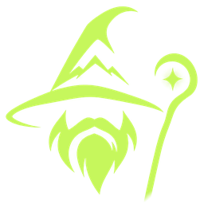

{{ sub }}
Open source. Not a medical device. Not affiliated with WHOOP.
Tap each orb. Full detail lives in Hub › How your numbers work.
The full terms are in TERMS.md, shipped with Noop Ridge. This is not legal advice.
WHOOP 4.0: turn on HR broadcast in the official app once. WHOOP 5.0 / MG: close the official app first. Bluetooth is only used to read your strap.
Stored on this phone only. Change any of it later in Settings.

Sage is not medical advice. You can connect or disconnect it any time from Hub.